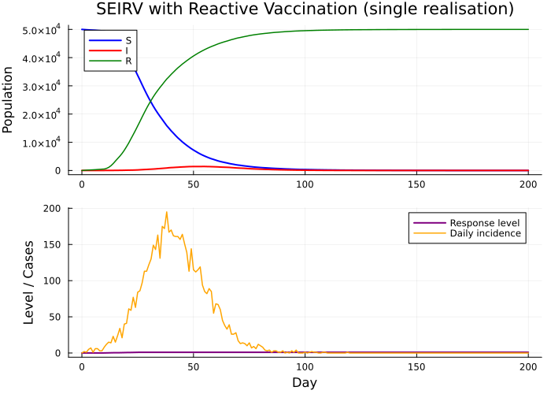
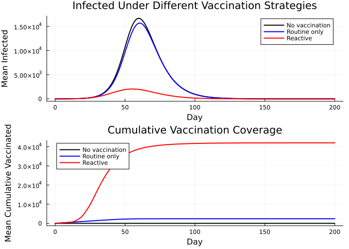
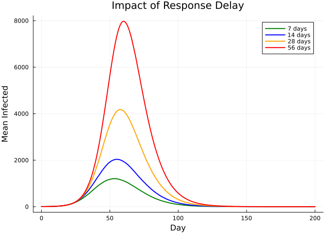
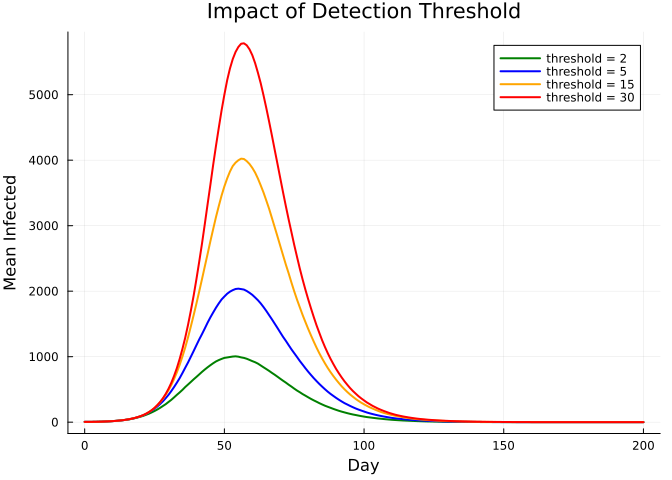
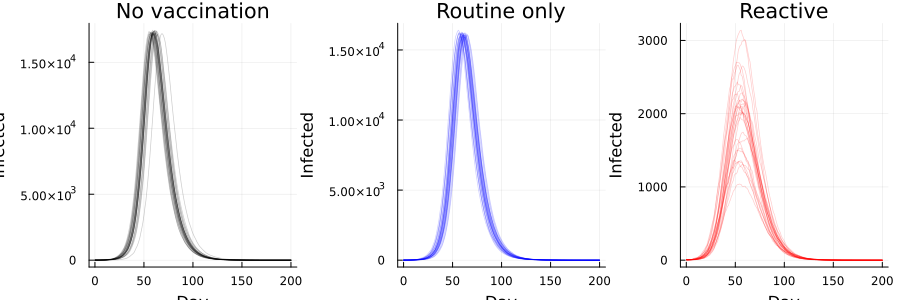
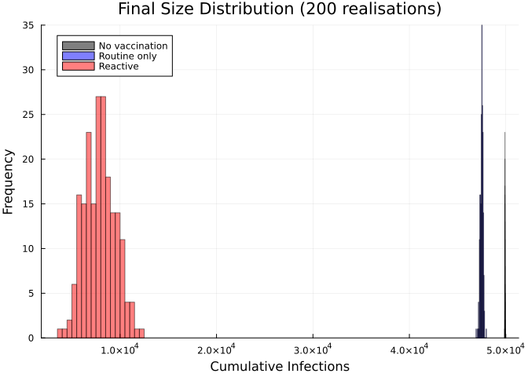

Reactive Vaccination Policy with Outbreak Detection
Introduction
Outbreak response in many settings — yellow fever, Ebola, cholera — follows a reactive pattern: routine surveillance detects an increase in cases, triggering an emergency vaccination campaign that ramps up over days to weeks.
This vignette demonstrates how to model policy-driven dynamics where the model’s behaviour changes based on endogenous surveillance signals:
- Cases are detected with imperfect sensitivity (
p_detect). - Weekly detected cases are compared against a threshold.
- When the threshold is breached, a response ramps up over a delay period.
- Emergency vaccination supplements routine vaccination, reducing transmission.
Key modelling features demonstrated:
| Feature | Odin construct |
|---|---|
| Weekly accumulator | zero_every = 7 |
| Conditional logic | if/else expression |
| Capped ramp-up | min() |
| Scenario comparison | Parameter sweeps |
Model: SEIRV with Outbreak Detection
using Odin
using Plots
using Statistics
seirv_reactive = @odin begin
# Transmission dynamics
update(S) = S - n_SE - n_SV
update(E) = E + n_SE - n_EI
update(I) = I + n_EI - n_IR
update(R) = R + n_IR + n_SV
initial(S) = N - I0
initial(E) = 0
initial(I) = I0
initial(R) = 0
# Transition probabilities
foi = beta * I / N
n_SE = Binomial(S, 1 - exp(-foi * dt))
n_EI = Binomial(E, 1 - exp(-sigma * dt))
n_IR = Binomial(I, 1 - exp(-gamma * dt))
# --- Surveillance and detection ---
# Detected cases accumulate weekly then reset
initial(cum_detected, zero_every = 7) = 0
update(cum_detected) = cum_detected + Binomial(n_EI, p_detect)
# Outbreak flag: trigger when weekly detected cases exceed threshold
outbreak = (cum_detected >= case_threshold) ? 1 : 0
# --- Response delay ---
# Vaccination capacity ramps up linearly over response_delay days
initial(response_level) = 0
update(response_level) = min(1.0, response_level + outbreak * dt / response_delay)
# --- Vaccination ---
# Total vaccination rate: routine baseline + emergency surge
vacc_rate = routine_vacc + response_level * emergency_vacc
n_SV = Binomial(S, 1 - exp(-vacc_rate * dt))
# --- Tracking variables ---
initial(incidence, zero_every = 1) = 0
update(incidence) = incidence + n_SE
initial(cum_vaccinated) = 0
update(cum_vaccinated) = cum_vaccinated + n_SV
# Parameters
beta = parameter(0.6)
sigma = parameter(0.2)
gamma = parameter(0.1)
p_detect = parameter(0.3)
case_threshold = parameter(5)
response_delay = parameter(14)
routine_vacc = parameter(0.001)
emergency_vacc = parameter(0.05)
I0 = parameter(5)
N = parameter(50000)
endOdin.DustSystemGenerator{var"##OdinModel#277"}(var"##OdinModel#277"(8, [:S, :E, :I, :R, :cum_detected, :response_level, :incidence, :cum_vaccinated], [:beta, :sigma, :gamma, :p_detect, :case_threshold, :response_delay, :routine_vacc, :emergency_vacc, :I0, :N], false, false, false, false, false, Dict{Symbol, Array}()))The model state indices are:
| Index | Variable |
|---|---|
| 1 | S |
| 2 | E |
| 3 | I |
| 4 | R |
| 5 | cum_detected |
| 6 | response_level |
| 7 | incidence |
| 8 | cum_vaccinated |
Baseline Simulation
A single realisation of the reactive vaccination scenario:
base_pars = (
beta=0.6, sigma=0.2, gamma=0.1,
p_detect=0.3, case_threshold=5.0,
response_delay=14.0,
routine_vacc=0.001, emergency_vacc=0.05,
I0=5.0, N=50000.0,
)
times = collect(0.0:1.0:200.0)
sys = System(seirv_reactive, base_pars; dt=1.0, seed=42)
reset!(sys)
result = simulate(sys, times)
p = plot(layout=(2, 1), size=(700, 500), link=:x)
# Top: compartments
plot!(p[1], times, result[1, 1, :], label="S", lw=2, color=:blue)
plot!(p[1], times, result[3, 1, :], label="I", lw=2, color=:red)
plot!(p[1], times, result[4, 1, :], label="R", lw=1.5, color=:green)
ylabel!(p[1], "Population")
title!(p[1], "SEIRV with Reactive Vaccination (single realisation)")
# Bottom: response level and daily incidence
plot!(p[2], times, result[6, 1, :], label="Response level", lw=2,
color=:purple, ylabel="Level / Cases")
plot!(p[2], times, result[7, 1, :], label="Daily incidence", lw=1.5,
color=:orange, xlabel="Day")
p
The response level ramps from 0 to 1 once weekly detected cases breach the threshold, with the vaccination rate increasing accordingly.
Scenario Comparison
We compare three strategies:
- No vaccination —
routine_vacc = 0,emergency_vacc = 0 - Routine only —
routine_vacc = 0.001,emergency_vacc = 0 - Reactive —
routine_vacc = 0.001,emergency_vacc = 0.05
scenarios = [
("No vaccination", 0.0, 0.0),
("Routine only", 0.001, 0.0),
("Reactive", 0.001, 0.05),
]
n_runs = 50
cols = [:black, :blue, :red]
p_inf = plot(xlabel="Day", ylabel="Mean Infected",
title="Infected Under Different Vaccination Strategies")
p_vax = plot(xlabel="Day", ylabel="Mean Cumulative Vaccinated",
title="Cumulative Vaccination Coverage")
for (idx, (label, rv, ev)) in enumerate(scenarios)
I_mean = zeros(length(times))
V_mean = zeros(length(times))
for seed in 1:n_runs
pars = merge(base_pars, (routine_vacc=rv, emergency_vacc=ev))
sys = System(seirv_reactive, pars; dt=1.0, seed=seed)
reset!(sys)
r = simulate(sys, times)
I_mean .+= r[3, 1, :]
V_mean .+= r[8, 1, :]
end
I_mean ./= n_runs
V_mean ./= n_runs
plot!(p_inf, times, I_mean, label=label, color=cols[idx], lw=2)
plot!(p_vax, times, V_mean, label=label, color=cols[idx], lw=2)
end
plot(p_inf, p_vax, layout=(2, 1), size=(700, 500))
Reactive vaccination substantially reduces the epidemic peak and total infections, while routine vaccination alone provides only modest benefit for a fast-spreading pathogen.
Sensitivity to Response Delay
A critical policy parameter is how quickly the emergency response can be mobilised. We compare response delays of 7, 14, 28, and 56 days:
delays = [7, 14, 28, 56]
delay_cols = [:green, :blue, :orange, :red]
p_delay = plot(xlabel="Day", ylabel="Mean Infected",
title="Impact of Response Delay")
for (idx, d) in enumerate(delays)
I_mean = zeros(length(times))
for seed in 1:n_runs
pars = merge(base_pars, (response_delay=Float64(d),))
sys = System(seirv_reactive, pars; dt=1.0, seed=seed)
reset!(sys)
r = simulate(sys, times)
I_mean .+= r[3, 1, :]
end
I_mean ./= n_runs
plot!(p_delay, times, I_mean, label="$d days", color=delay_cols[idx], lw=2)
end
p_delay
Faster response (shorter delay) dramatically reduces the peak. A 7-day response can avert a large fraction of cases compared to a 56-day response.
Sensitivity to Detection Threshold
The threshold for triggering the emergency response also matters. Lower thresholds mean earlier detection but potentially more false alarms:
thresholds = [2, 5, 15, 30]
thresh_cols = [:green, :blue, :orange, :red]
p_thresh = plot(xlabel="Day", ylabel="Mean Infected",
title="Impact of Detection Threshold")
for (idx, th) in enumerate(thresholds)
I_mean = zeros(length(times))
for seed in 1:n_runs
pars = merge(base_pars, (case_threshold=Float64(th),))
sys = System(seirv_reactive, pars; dt=1.0, seed=seed)
reset!(sys)
r = simulate(sys, times)
I_mean .+= r[3, 1, :]
end
I_mean ./= n_runs
plot!(p_thresh, times, I_mean,
label="threshold = $th", color=thresh_cols[idx], lw=2)
end
p_thresh
Stochastic Variability
Individual realisations highlight the inherent uncertainty in outbreak trajectories and the timing of the reactive response:
p_stoch = plot(layout=(1, 3), size=(900, 300), legend=false)
scenario_pars = [
merge(base_pars, (routine_vacc=0.0, emergency_vacc=0.0)),
merge(base_pars, (routine_vacc=0.001, emergency_vacc=0.0)),
merge(base_pars, (routine_vacc=0.001, emergency_vacc=0.05)),
]
scenario_labels = ["No vaccination", "Routine only", "Reactive"]
for (idx, (pars, label)) in enumerate(zip(scenario_pars, scenario_labels))
for seed in 1:30
sys = System(seirv_reactive, pars; dt=1.0, seed=seed)
reset!(sys)
r = simulate(sys, times)
plot!(p_stoch[idx], times, r[3, 1, :],
color=cols[idx], alpha=0.2, lw=0.7)
end
title!(p_stoch[idx], label)
xlabel!(p_stoch[idx], "Day")
ylabel!(p_stoch[idx], "Infected")
end
p_stoch
Final Size Distribution
We compare the distribution of cumulative infections across 200 stochastic realisations for each strategy:
n_sims = 200
final_sizes = Dict{String, Vector{Float64}}()
for (label, rv, ev) in scenarios
sizes = Float64[]
for seed in 1:n_sims
pars = merge(base_pars, (routine_vacc=rv, emergency_vacc=ev))
sys = System(seirv_reactive, pars; dt=1.0, seed=seed)
reset!(sys)
r = simulate(sys, times)
# Final R = total recovered (infected + vaccinated), so cumulative
# infections ≈ R_final - cum_vaccinated_final
cum_inf = r[4, 1, end] - r[8, 1, end]
push!(sizes, cum_inf)
end
final_sizes[label] = sizes
end
p_fs = plot(xlabel="Cumulative Infections", ylabel="Frequency",
title="Final Size Distribution (200 realisations)")
for (idx, (label, _, _)) in enumerate(scenarios)
histogram!(p_fs, final_sizes[label], bins=30, alpha=0.5,
label=label, color=cols[idx])
end
p_fs
println("Final size summary (mean ± std):")
for (label, _, _) in scenarios
vals = final_sizes[label]
println(" $label: $(round(mean(vals), digits=0)) ± " *
"$(round(std(vals), digits=0))")
endFinal size summary (mean ± std):
No vaccination: 49907.0 ± 9.0
Routine only: 47496.0 ± 146.0
Reactive: 7878.0 ± 1585.0Summary
| Feature | Odin construct |
|---|---|
| Weekly case accumulator | initial(cum_detected, zero_every = 7) |
| Outbreak detection | if (cum_detected >= threshold) 1 else 0 |
| Response ramp-up | min(1.0, response_level + outbreak * dt / delay) |
| Competing transitions | Independent binomial draws from S |
| Cumulative tracking | update(cum_vaccinated) = cum_vaccinated + n_SV |
This model captures the essential features of reactive vaccination policy: imperfect surveillance, delayed response, and the trade-off between detection sensitivity and response speed. The framework extends naturally to more complex settings (multi-region, age-structured, supply-constrained campaigns).